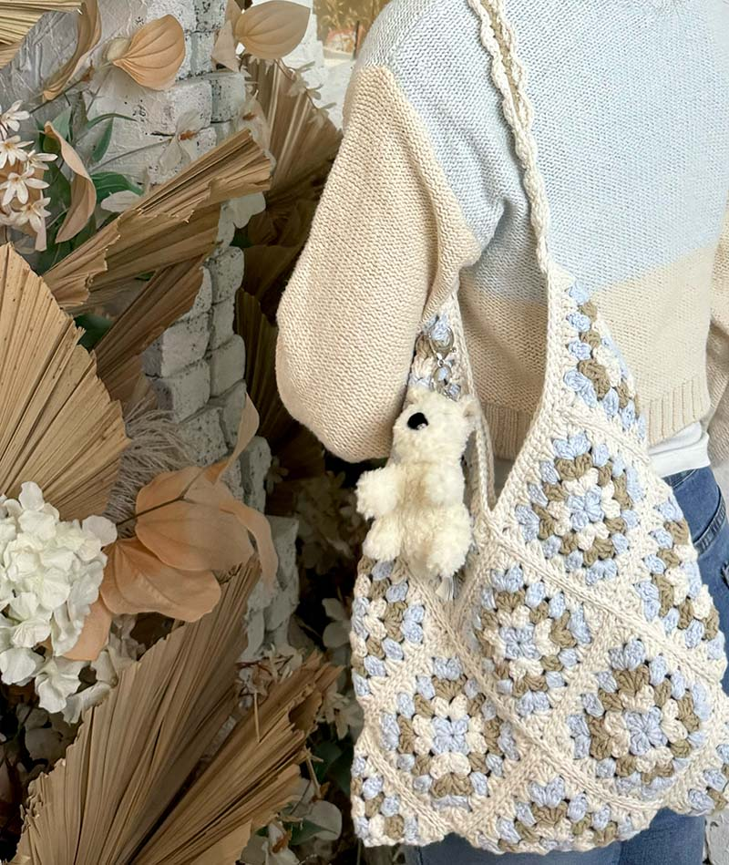

Emmeline’s images for her "Everyday Picture" project are about things around us that are easily forgotten such as leftover tomatoes from lunch and a can of soda being left out of nowhere.
I thought that the image of the soda can sitting on pipes is most interesting from Emmeline’s archive because it tells her story in the most straightforward way. When I saw this image, I would ask myself why is the soda can in a place that it usually does not belong to? Is it forgotten by anyone to toss it in the trash? Is it forgotten by a construction worker that drank it during break? The story of the soda can is the most mysterious aspect of the image as there are so many possibilities, whereas the most obvious aspect is the artist’s intention to bring forgotten things out. The narrative from just one single image opens my imagination and curiosity towards the story.
After hearing Emmeline’s ideas, I suggested some techniques that she can use to tell her story. These include the gallery animation with the automatic horizontal scroll and the hovering effect that would trigger a description/story of each image.
Photographed by Emmeline
This bag is meaningful to me because it is the first crochet project that I started with no previous experience (but the second one that I finished). This image will be part of my collection for my “Everyday Picture” project where I will display my crochet projects.
This collection speaks about me being outside of school as crocheting is one of my hobbies. I like crocheting bags the most as they are usable and also fun to make.
To make my images more compelling, I plan to reshoot my photos to make them higher quality. I am also considering placing them together on one surface for a group photo. When users click on a project, they will have a closer look and a description of the project. If I can find the progress pictures for every project, I will also consider putting them onto my project.

Photographed by Joanne Cai
Visual Thinking Strategies Research
After reading the Visual Thinking article, I began to understand how imagery plays a role in learning. Visual Thinking Strategies help learners in diverse subjects, especially those with long paragraphs of text. For instance, in an article discussing the topic of biomimicry and how that can be applied in design, it would be much more useful to provide images such as examples of biomimicry projects. This allows the audience to have the visualization to interpret, expand, and be curious about.
The website that I analyzed is Saapro, a website about waste disposal and sustainability. This website is strong in utilizing graphics, images, and interactive animations that represent nature because these increase engagement and give a sense that the theme of the website is about sustainability. A drawback of the images is that I paid more attention to the images than the texts. For instance, the title is covered by the image and there is a line of words that has a similar color as the graphic which makes it hard to read.
Modal Design Research
After reading “Best Practices for Modals / Overlays / Dialog Windows” by Naema Baskanderi, I learned many rules for designing modals. I am glad to read about this before coding my Madlibs project because I was going to use a modal to show errors to the user and the reading emphasized to not do this for best practice as the “top highlight”.
Additionally, I realized an error that I often make for my designs where I place modals right in the middle of the screen. However, the reading highlighted that modals should be placed in the upper half of the screen. I sometimes also oversize my modals and I learned that this would lower the accessibility especially in the mobile screens.
An interesting term that I learned from the reading is “toast”, a time-based, non-modal UI that is usually placed at the top of the screen. I remember using this for a mobile app design to provide feedback for my user after they successfully did something.
Form Design Research
As a designer, I realized how many mistakes I have made in previous projects that involved form design after reading "Best Practices for Form Design" by Salim Ansari. One example is the habit of focusing on symmetric input field size and neglecting the usability of it. The example from the reading is matching the width of the input field of an email input and zip code input, where they are highly different in character length. Now I understand that by overly focusing on symmetry, we can neglect the usability of the design where users may be confused about their input whether they had typed enough characters.
Moving from a designer to a user’s perspective, I understand how important the visualization of steps is in the process of filling out a form. When I encounter a long form like filing the FAFSA, I tend to get bored and tired of the process. However, the ability to see how far I am in the form and what step I am helps me complete the form. While filling out a form, I like to set a goal to take a break after I finish a certain step, so I am sure that I have completed that section when I am back from my break.
I believe that the Spotify sign up process follows the best practices. For instance, for entering the email, the label is located above the input field, there is an inline label that shows the format of entering an email, and when the user enters an invalid email there would be an explanation of what is wrong and provides an example.